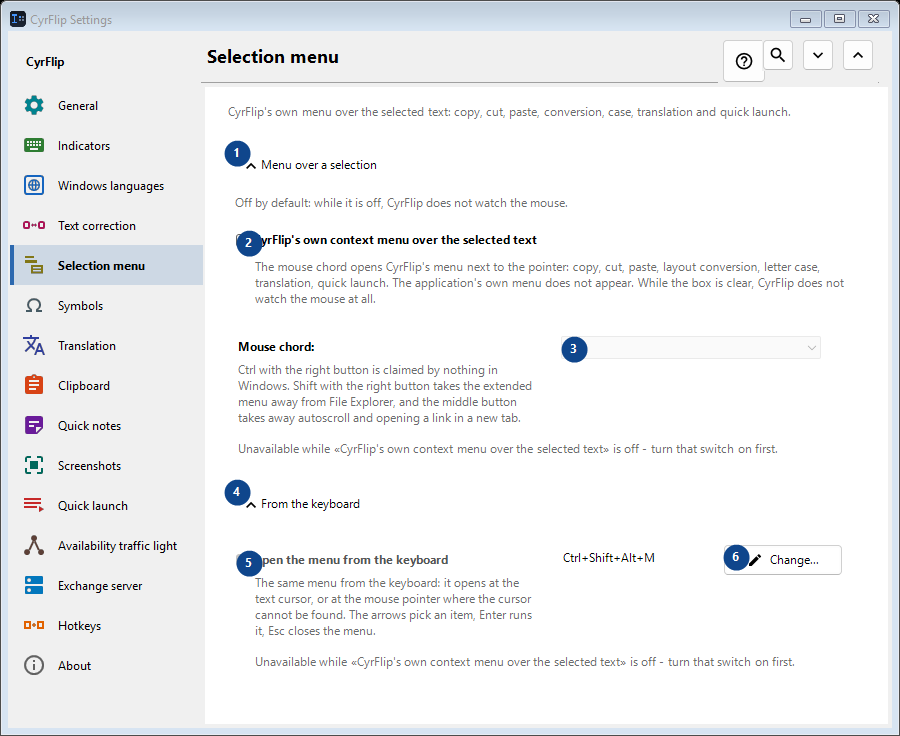
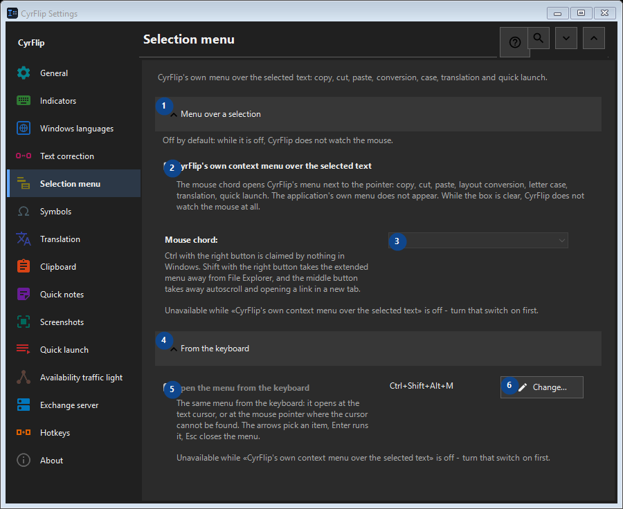

Selection menu
What this is for
CyrFlip's own menu over the selected text: copy, cut, paste, conversion, case, translation and quick launch.


In this order
Settings apply immediately. There is no required order; use the groups below.
The elements
1. Menu over a selection
Use this command when you need the action named above. Review any confirmation before accepting it.
Your shortcuts2. CyrFlip's own context menu over the selected text
The mouse chord opens CyrFlip's menu next to the pointer: copy, cut, paste, layout conversion, letter case, translation, quick launch. The application's own menu does not appear. While the box is clear, CyrFlip does not watch the mouse at all.
Your shortcuts3. Mouse chord
Unavailable while «CyrFlip's own context menu over the selected text» is off - turn that switch on first. This control is currently unavailable. Enable its feature or select an entry first.
Your shortcuts4. From the keyboard
Use this command when you need the action named above. Review any confirmation before accepting it.
Your shortcuts5. Open the menu from the keyboard
Unavailable while «CyrFlip's own context menu over the selected text» is off - turn that switch on first. This control is currently unavailable. Enable its feature or select an entry first.
Your shortcuts6. Change - Open the menu from the keyboard
Use this command when you need the action named above. Review any confirmation before accepting it.
Your shortcuts